캐릭터 + 소품 구성 예시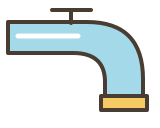
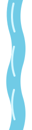
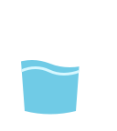
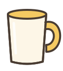
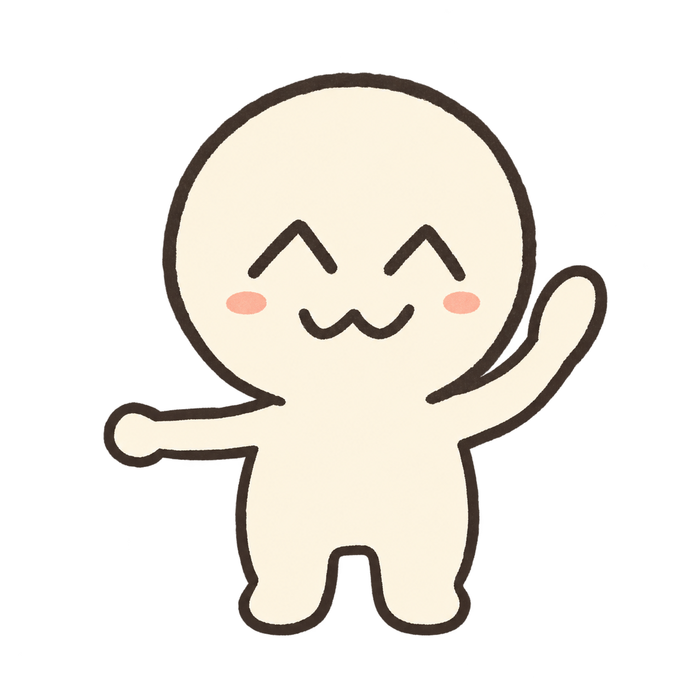
미술 미리보기 · 게임 플레이 화면은 다음 세션에서 구현
손그림을 닮은 색
종이 #fff8e8물 #70cbe6똥물 #b58a60노랑 #f5ca62코랄 #f29b89
독립 에셋
friend-idlecharacters/friend-idle.png
cup-sunnyprops/cup-sunny.svg
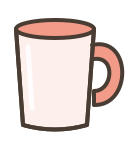
cup-coralprops/cup-coral.svg
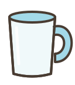
cup-skyprops/cup-sky.svg
cup-water-fillprops/cup-water-fill.svg
faucetprops/faucet.svg
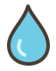
drop-cleanfx/drop-clean.svg
stream-cleanfx/stream-clean.svg
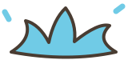
splash-cleanfx/splash-clean.svg
drop-dirtyfx/drop-dirty.svg
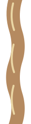
stream-dirtyfx/stream-dirty.svg
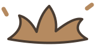
splash-dirtyfx/splash-dirty.svg
dirty-warningui/dirty-warning.svg
dirty-actionui/dirty-action.svg
lane-leftui/lane-left.svg
lane-centerui/lane-center.svg
lane-rightui/lane-right.svg
pauseui/pause.svg
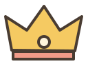
winner-crownui/winner-crown.svg